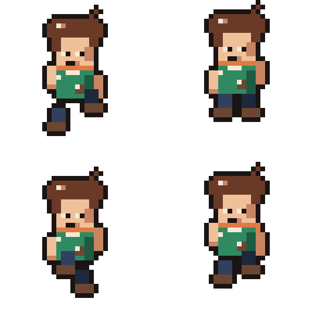
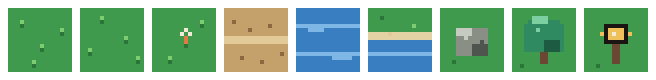
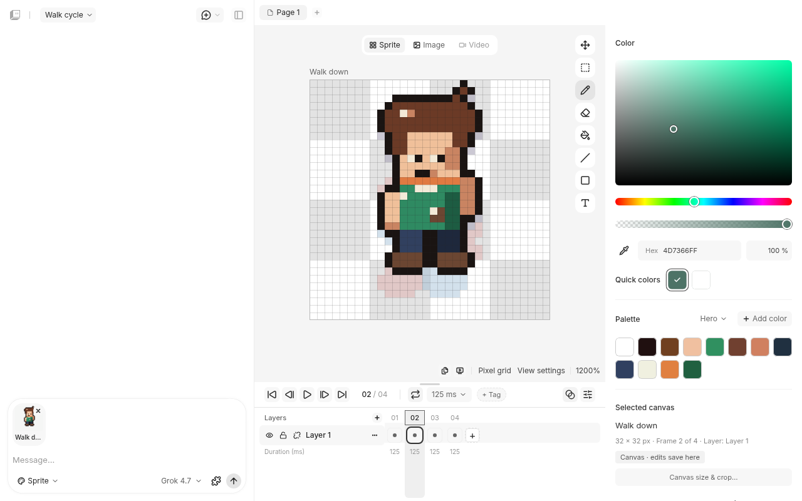
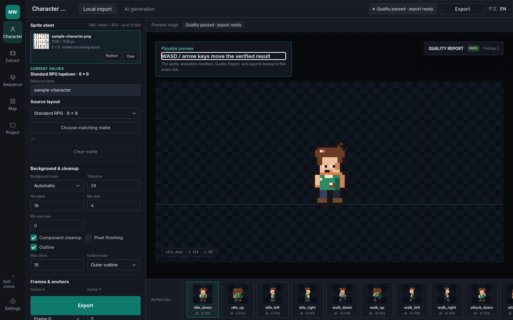
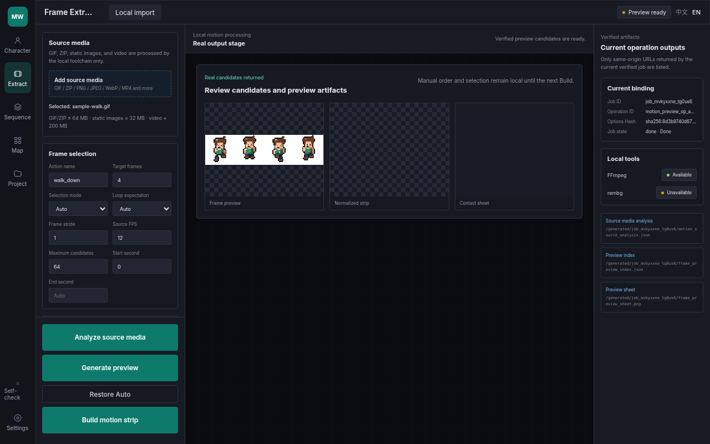
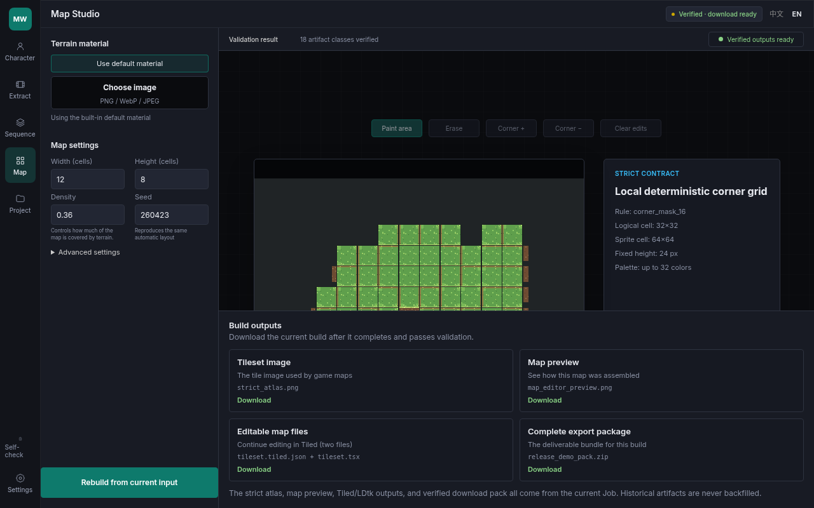

Local pixel workflow · v0.6.0
Pixel characters, on your machine.
Studio builds the character pack. VNext edits the canvas.
Run it locally Source repository v0.6.0 release
Source-only. The website does not provide user file upload or cloud processing. It does not accept files and does not call models.

- 01StudioCharacter pack
- 02VNextCanvas edit
- 03ExtractLocal frames
- 04ExportZip packs

Studio default
VNext opt-in
Runs locally
01 / Workspace
VNext canvas

- Assistants Codex, Grok, and Antigravity. One undo.
- Pixel tools Brush, fill, onion skin, palette, timeline.
- Linked cels One shared cel updates every frame that uses it.
- History Full history stays on disk.
- Astra An explicit skill makes one undoable change.
02 / Studio
Studio stays the default

- Character Import a local sheet and build the pack.
- Extract Read local media and preview frames.
- Sequence Sort local frames by filename.

- Map Local rules become an editable map.
#sceneopens it. - Project Existing artifacts become
project_pack.zip. - Self-check QA module and local settings.

03 / Exports
Files the local app writes
- Godot NPC JSON
godot_npc_pack.zipwritesAI资源库/一图全动作/<character_id>/withnpc.json,sprite.png, andthumb.png.schemaVersion1. - RPG Maker
rpgmaker_pack.zip, 144×192, 48×48 frames. - OCAD
ocad_pack.zip, 252×252 regions. - LDtk One level:
project.ldtkandscene_pack.zip. - Character pack
character_pack.zipandeditor_metadata.json. - Project pack
project_pack.zipfrom artifacts already on disk.
04 / Boundaries
Not in v0.6.0
- Godot .tres Not implemented.
- Map scope No Full WFC, multi-level LDtk, or saved external-editor round trips.
- Parallax Not implemented.
- Scene quality One release smoke.
- AI AI generation is an optional path. Local sheets do not require it.
- Hosting Auth, billing, and deployment stay outside this preview.
- Calibration One reviewed 1K acceptance.
05 / Start
Getting started
Node.js 22 or 24. Node.js 24 LTS is recommended. The server listens on 127.0.0.1:4173 and opens Character Studio.
$ git clone https://github.com/dyk1454683243-sudo/moteweave.git
$ cd moteweave
$ npm ci
$ npm start07 / Contributing
Work from the source
CONTRIBUTING.md. Agents follow AGENTS.md. MIT. Canonical site: moteweave.pages.dev. Notes in the changelog and the v0.6.0 release.